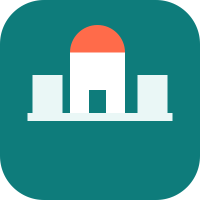
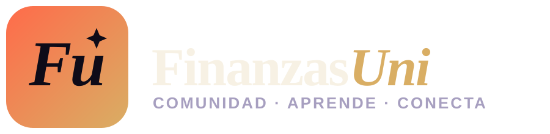

Ábrelo en el navegador (doble clic en preview.html). Para exportar a PNG: clic derecho sobre la imagen que elijas → "Guardar imagen como..." — el navegador la exporta ya en PNG. Si necesitas más resolución, sube el width/height del <img> correspondiente en este archivo antes de guardar.

icon.svg — monograma "Fu" con chispa, coral→dorado
logo-horizontal.svg